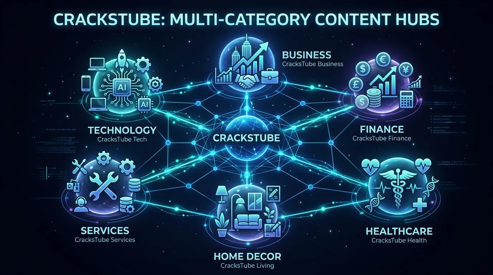
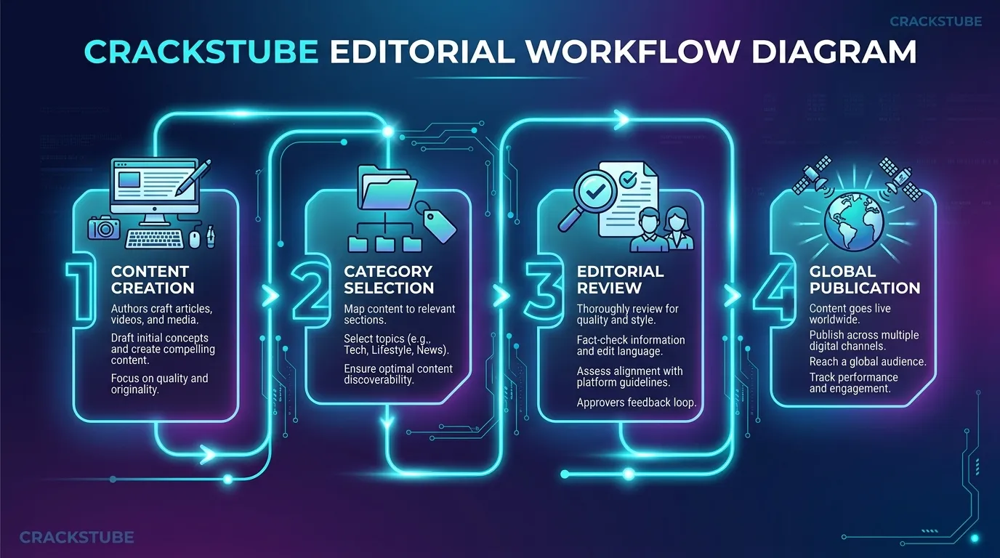

CracksTube: The Complete Guide to What It Is, How It Works, and Why the Name Causes Confusion
If you have searched online for "CracksTube", you have likely noticed something unusual — search engine results often paint two entirely different pictures. On one side, results direct you to CracksTube.com, an established digital publishing hub hosting well-researched informational articles across Technology, Business, Services, Home Decor, Healthcare, Finance, Law, and Real Estate. On the other side, some search queries associate the name with unofficial download sites or pirated media links that have zero connection to the legitimate platform.
This definitive guide sets the record straight. We will examine what CracksTube actually is, how the platform operates, why the naming overlap creates misunderstanding, and how content creators and readers can leverage CracksTube.com for knowledge sharing and white-hat SEO guest posting.
CracksTube (specifically CracksTube.com) is an article-based, multi-category publishing platform. It does NOT host software cracks, keygens, installers, torrents, or pirated video downloads. Any site offering software downloads under a similar name is an unrelated third-party entity.
What Is CracksTube?
In its legitimate form, CracksTube refers to CracksTube.com — an open digital publication designed to serve two primary audiences:
- For Readers: A free, easily accessible repository of informative articles covering diverse fields like technology trends, business strategy, healthcare advances, home decor, and professional services.
- For Authors & Brands: A reputable publishing avenue for guest contributors, marketers, and industry specialists to share original insights and build digital topical authority.
Because CracksTube operates across multiple verticals rather than confining itself to a single narrow topic, it attracts a broad demographic of readers searching for reliable daily content.

Where Does the Name Come From?
Brand naming in the digital content industry prioritizes memorability and impact. The name "CracksTube" blends two familiar digital concepts:
- "Tube": Historically popularized by video platforms (e.g., YouTube), signaling a fast-flowing stream of media and content.
- "Cracks": Intended by the founders to symbolize "cracking open" complex topics, breaking down detailed business, tech, and healthcare concepts into easy-to-understand articles.
However, because "crack" is also a common term in software piracy (referring to license bypass utilities), automated search engines and unfamiliar users sometimes confuse CracksTube.com with software download portals. This overlap is purely linguistic and coincidental, making clarity essential for visitors arriving via search engines.
CracksTube.com: An Overview of the Publishing Platform
CracksTube.com functions similarly to renowned digital magazines and collaborative blogging platforms like Medium, Substack, and top-tier business publications. However, it stands out with its organized multi-vertical hub structure:
- No Paywalls: Articles can be read freely without subscription barriers or mandatory account sign-ups.
- Strict Quality Editorial Standards: Submissions undergo human review to eliminate spam and keep content informative.
- Clean Reader Experience: Free of intrusive download popups, deceptive redirects, or unauthorized software links.
How CracksTube.com Works
The operational workflow of CracksTube.com prioritizes user accessibility and author visibility:
- Content Discovery: Readers browse articles sorted cleanly by category or utilize search filters to find specific guides.
- Direct Reading Access: Articles load instantly in clean, readable HTML without forcing user registrations.
- Guest Contribution System: Authors submit original drafts through an editorial portal for review and publication.
- SEO Indexing: Published articles are indexed rapidly by search engines like Google and Bing, passing topical relevance to contributors.
Core Content Categories Covered on CracksTube
Diversity of content is the cornerstone of CracksTube. Here is what readers can expect across our primary verticals:
🍜 Food
Authentic culinary guides, traditional desserts, recipes, and food culture reviews.
💻 Technology
In-depth guides on AI innovations, SaaS software, cloud computing, cybersecurity best practices, and consumer electronics.
📈 Business
Actionable strategies for startups, digital marketing, corporate management, financial growth, and market trends.
🤝 Services
Breakdowns of B2B services, IT consulting, customer support outsourcing, and professional service solutions.
🏡 Home Decor
DIY renovation projects, sustainable interior design, space optimization tips, and home architectural trends.
🏥 Healthcare
Evidence-based wellness articles, medical tech breakthroughs, fitness insights, and preventive healthcare habits.
Key Features of CracksTube.com
- Zero Mandatory Registration: Instant reading access for every visitor.
- Multi-Vertical Reach: Comprehensive coverage spanning 6+ major global industries.
- Editorial Integrity: Rigorous review process ensuring high-value, human-curated content.
- 100 PageSpeed Performance: Light-speed page loads built for mobile and desktop optimization.
- White-Hat Guest Posting: Clean link-building opportunities for brands and SEO agencies.
Why CracksTube Is Trending in Search Results
Search volume for "CracksTube" has grown significantly due to three main drivers:
- Brand Query Curiosity: Users searching for the platform to verify whether it is an editorial blog or a software download site.
- Rapid Expansion of Content Library: Daily additions of high-quality articles across Technology, Business, Food, and Healthcare boost keyword footprints in search indexes.
- SEO & Link-Building Demand: Digital marketers and agency strategists actively searching for reputable multi-niche sites for guest posting placements.
CracksTube.com vs. Unofficial "Crackstube" Sites
To eliminate any remaining doubt, the comparison table below outlines the structural differences between the legitimate CracksTube.com platform and unrelated download portals:
| Feature / Dimension | CracksTube.com (Official Platform) | Unofficial Download Sites |
|---|---|---|
| Primary Purpose | Informational articles, guides & guest publishing | Cracked software installers & torrent links |
| Content Type | Food, Tech, Business, Services, Home Decor, Healthcare | Executable files, serial keys & video streams |
| Guest Posting | Available for writers and brands | Not applicable |
| Download Buttons | None — 100% text and article based | Abundant, often leading to ad popups |
| User Safety & Trust | Safe text content; zero security risks | High risk of malware or deceptive redirects |
| Legal Standing | Fully legitimate digital magazine | Frequent copyright & licensing issues |
Is CracksTube.com Safe and Legitimate?
Yes. CracksTube.com is completely safe to browse and publish on. Because it operates purely as an editorial content site:
- It does not host
.exe,.zip, or executable installation files. - It does not ask users to disable antivirus protection or install browser extensions.
- It adheres to standard web security practices, HTTPS encryption, and clean ad policies.
Guest Posting on CracksTube.com: Strategic SEO Benefits
For SEO specialists and content managers, publishing guest posts on multi-category publications like CracksTube offers tangible advantages:
- Targeted Referral Traffic: Readers interested in specific niches visit dedicated category sections.
- Contextual Backlinks: High-relevance in-content links that reinforce domain authority.
- Faster Search Indexing: Search engine bots crawl active publishing hubs frequently, indexing new articles rapidly.
- Topical Authority Building: Placing quality content alongside industry articles signals expertise to search algorithms.

How to Submit a Guest Post on CracksTube
Follow these straightforward steps to contribute an article to CracksTube:
- Select Your Category: Choose between Food, Tech, Business, Services, Home Decor, or Healthcare.
- Draft Original Content: Prepare a 1000+ word article that offers clear value, original insights, and zero plagiarism.
- Format Properly: Include clear heading tags (H2, H3), concise paragraphs, and relevant royalty-free visuals.
- Submit via Contact Page: Visit our Contact Us page or email our editorial team directly for review.
CracksTube.com vs. Other Digital Publishing Platforms
| Platform Attribute | CracksTube.com | Single-Niche Blogs | Open Blogging Platforms |
|---|---|---|---|
| Category Range | Broad multi-vertical (6+ topics) | Strictly 1 topic | Unfiltered open topics |
| Editorial Review | Human review required | Strict review | Minimal to zero review |
| Paywall / Registration | Free access without login | Varies | Often behind meter paywalls |
| SEO Optimization | Structured schema & fast indexing | Varies | Platform dependent |
Pros and Cons of CracksTube.com
✔ Advantages (Pros)
- 100% free access for all readers without paywalls
- Diverse categories spanning food, technology, business, services, and health
- Open, white-hat guest posting workflow for authors
- Ultra-fast page speed and mobile responsiveness
- Clean, ad-light reader experience
✘ Considerations (Cons)
- Search name similarity with unrelated piracy sites requires user clarification
- Submissions must meet strict quality standards to pass editorial review
Frequently Asked Questions About CracksTube
Here are answers to the most common questions searchers ask regarding CracksTube:
CracksTube refers to CracksTube.com, a premier online digital publishing platform that shares informational articles and guides across Food, Technology, Business, Services, Home Decor, Healthcare, Finance, and Law.
No. CracksTube.com is strictly an article-based educational publication. It does not host software cracks, installers, or pirated media files. Any download site using a similar name is completely unrelated.
No. All articles on CracksTube.com are freely accessible to readers without mandatory account creation or subscription fees.
You can submit original, high-quality drafts through our Contact Page. Our editorial team reviews every submission for relevance and quality prior to publication.
Because the word "crack" is used both as a colloquial phrase ("cracking open a topic") and in software piracy, automated search engine algorithms sometimes mix legitimate CracksTube.com articles with unrelated queries.
Yes. Guest publishing on established multi-category hubs like CracksTube helps build brand exposure, drive targeted referral traffic, and earn high-relevance contextual backlinks.
Conclusion
CracksTube (CracksTube.com) stands out as a reliable, high-speed, multi-category publishing platform designed for modern readers and content creators. By distinguishing the official informational publication from unrelated software download portals, searchers can safely browse expert articles in Food, Technology, Business, Services, Home Decor, and Healthcare.
Whether you are looking to stay informed on emerging industry trends or seeking a reputable platform to publish your guest content, CracksTube provides the perfect ecosystem. Contact our editorial team today to contribute your next article!